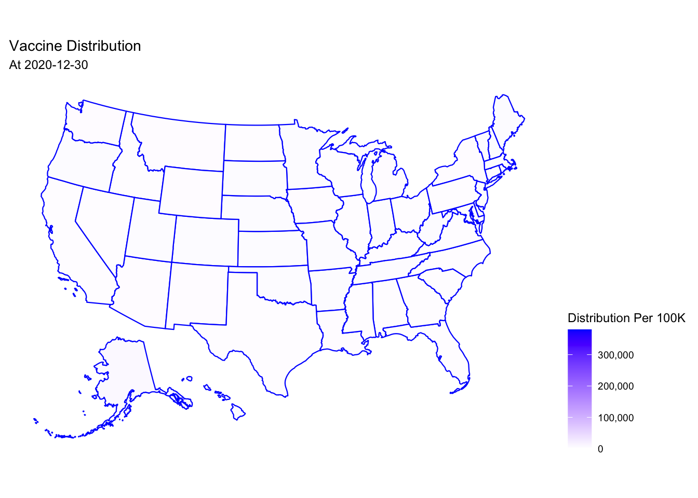
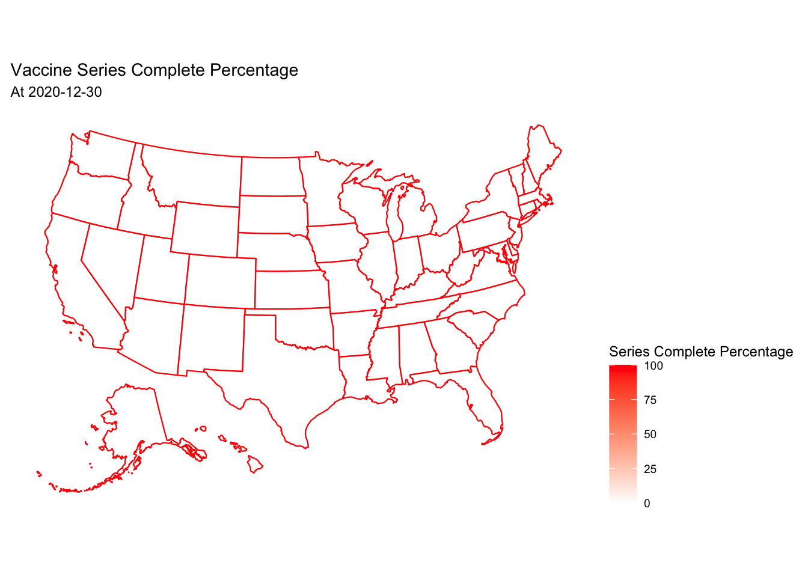

COVID-19 Trend Analysis
First, observe the general development of COVID-19 in the United States. The sum of data on cases was calculated for each state by date classification, and these data included new, cumulative, and historical cumulative data. The graphs of total cases and total deaths demonstrate a number of characteristics. First, total Cases increases at the beginning of 2021 and shows a substantial increase at the beginning of 2022, which raises the question whether the increase in Cases is due to seasonal factors or to policy easing.
Next, a graph of total deaths over time is drawn. Total Deaths show the same upward trend at the beginning of 2021 and the beginning of 2022.
Then, the graphs of new cases and new deaths are plotted, and the number of new cases can reflect the changes over time more visually. 2021 starts with more new cases, and then the number of new cases gradually decreases. At the beginning of 2022, the number of new cases reaches a very high peak, and then declines again.
New deaths are highest at the beginning of 2021 and then reach a low in July 2021. new deaths rise again in late 2021 and early 2022, and then fall again to a low.
Vaccine Status Analysis
The vaccine DISTRIBUTION is plotted separately at the end of the last three years (December 30, 2020, December 29, 2021, and November 16, 2022). This is shown in the US map and is expressed as distribution per 100 thousand to eliminate scale effects.
The results show essentially no vaccine distribution at the end of 2020. there is a fair amount of distribution across the US at the end of 2021, with slightly more vaccines (darker colors) in the East and West. By 2022, the distribution of vaccines is more pronounced, mainly in the northern part of the United States, especially in the Northeast and Northwest.

Similarly, data on the percentage of the population with vaccine series complete are plotted in the map of the U.S. At the end of 2020, there is no vaccine offered for vaccination. at the end of 2021, the series vaccination rate for states in the eastern, western, and south-central U.S. is already over 50%. By the end of 2022, most states have more than 50% vaccination coverage.

To explore whether the vaccine is effective in reducing the severity of the epidemic, the report chose one of the states, Califonia (CA), to draw graphs of change of vaccine distribution, change of vaccination complete rates, change of additional vaccination rates, new cases, and new deaths. and keeping the same timeline.
The time series plot set shows that both new cases and new DEATHs decline significantly in 2021 as VACCINE series complete and VACCINE distribution rise. However, the epidemic rebounded sharply again in late 2021 to early 2022, even with the emergence of ADDITIONAL DOSE. Subsequently, additional dose rises again and the epidemic growth rate slows down. This suggests that while vaccine can improve the epidemic, the determinants of the epidemic may lie elsewhere, such as policy.
Policy Analysis
First, the presentation of policy data. Each policy and the possible values to be taken are shown below.
| Recommend not leaving house |
| Advisory/Recommendation |
| Require not leaving house with exceptions for daily exercise, grocery shopping, and ‘essential’ trips |
| Mandatory - all people |
| No order found |
| No measures |
| No data |
|
| Restrictions on gatherings of 10 people or less |
| Bans gatherings of any size |
| Ban of gatherings over 1-10 people |
| Restrictions on gatherings between 11-100 people |
| No order found |
| Ban of gatherings over 25-50 people |
| No restrictions |
| No data |
|
| Require closing all levels |
| Require closing (only some levels or categories, eg just high school, or just public schools) |
| Recommend closing or all schools open with alterations resulting in significant differences compared to non-COVID-19 operations |
| No measures |
| No data |
|
| Require cancelling |
| Recommend cancelling |
| No measures |
| No data |
|
|
|
| Required in all shared/public spaces outside the home with other people present or all situations when social distancing not possible |
| Public Mask Mandate |
| Required in some specified shared/public spaces outside the home with other people present, or some situations when social distancing not possible |
| Required outside the home at all times regardless of location or presence of other people |
| No Public Mask Mandate |
| No data |
|
|
Clearly, each policy has a different intensity of implementation. The report will mainly analyze the most frequently discussed policies as a proxy for other policies. The selected policies include Gathering Bans and Mask Mandates. also, each policy is assigned a policy intensity in order of lightest to heaviest. This can quantify policy implementation efforts.
\[\text{Policy Stringen}_i=\frac{Rank_i}{Max(Rank_j)-Min(Rank_j)}\]
Using CA as an example, a time series plot of the intensity of implementation of the two policies versus additional cases and deaths is drawn. The following results illustrate that when Gathering Bans and Mask Mandates are relaxed, they cause a temporary bounce in new cases and deaths.